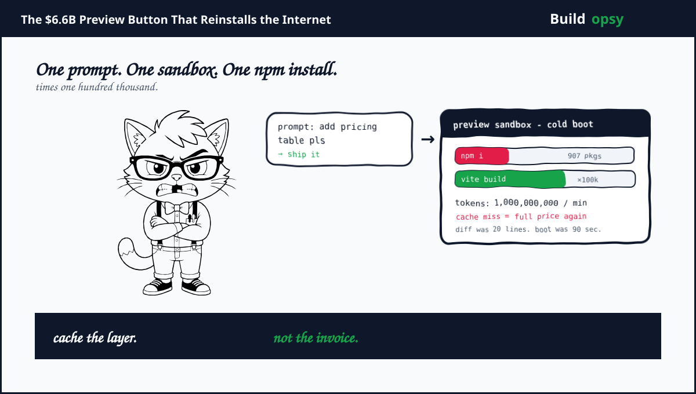

1. The Preview Button Is a Data Center
Type add a pricing table and watch the preview. One sentence becomes a plan, a patch set, a file rewrite, a Vite rebuild and a deployed URL. The sandbox spins up an isolated filesystem, clones a template, applies the diff, runs package install, starts a dev server and streams logs back through the agent. It feels instant. It costs a boot plus a build plus the model call that wrote the code.
The loop repeats every time you answer sure fix that button. The agent replays context, generates new patches, reinstalls deps if lockfile changed, rebuilds and redeploys. At one hundred thousand daily projects with three prompts per project that is three hundred thousand preview builds per day. Each build reinstalls a largely identical dependency tree and recompiles a React app that changed by twenty lines.
It is a heroic form of waste. Your user changed a button color and you reinstalled the internet to prove it.
2. Why Lovable Is the Right Unicorn Autopsy
Lovable launched in Stockholm in 2023, hit unicorn at $1.8 billion in July 2025 on a $200 million Series A led by Accel, then tripled to $6.6 billion in December 2025 on a $330 million Series B led by CapitalG and Menlo Ventures. Investors now include CapitalG, Menlo Ventures Anthology, NVentures, Salesforce Ventures, Databricks Ventures plus Accel and Creandum. Total capital raised is about $552.5 million.
Revenue tracks that curve. From $1 million ARR to $75 million ARR in seven months, then to $200 million ARR by November 2025. The product reported 180k paying subscribers plus more than 100k projects per day at its peak. Supabase integration is the quiet accelerator. Every project provisions a managed Postgres database plus auth plus storage plus edge functions. The platform went from frontend generator to full stack builder and the meter followed.
"We have 180,000 paying subscribers and crossed $75 million ARR in seven months" Anton Osika said in July 2025. Vibe coding stopped being a demo. It became a billing event every time someone pressed preview.
Lovable also publishes how it scales model traffic. The company disclosed processing more than one billion tokens per minute at peak and built an LLM provider load balancer with weighted fallback chains and project affinity. That disclosure is rare for a vibe coding unicorn. Most builders hide token routing behind a status page. Lovable explained why prompt cache affinity matters.
3. Reconstructing the Machine
A project lives in three places at once. Chat frontend on the left, live preview on the right and a sandbox in the middle that holds files plus a dev server. The agent runs a five stage loop. Spec collection, context assembly, change set planning, build and preview and feedback that seeds the next turn. The user thinks they sent a prompt. The platform thinks it ran a distributed build.
Code generation writes React plus TypeScript plus Tailwind plus shadcn components. Backend scaffolding provisions Supabase primitives through the Supabase MCP server. Each project gets an isolated Postgres plus bucketed storage plus auth wiring. Secrets stay client side and are injected at deploy, not in the model call. Edge functions generated in supabase/functions deploy as managed serverless. The static frontend ships as an SPA behind a CDN.
The loop is stateful. The agent keeps conversation history and file state. The next prompt reuses context. That reuse is where Lovable wins or bleeds. Without prompt cache reuse a 80k context replay costs full input price each turn. With reuse it costs a fraction. The load balancer must keep the same project on the same provider long enough to exploit caching while spreading load when a provider throttles. This is the same lesson my Supabase teardown found with connection reuse, only the pool is now a prompt cache.
4. The Billion Token Router You Did Not Put on Your Roadmap
Lovable routes model traffic across multiple LLM providers because no single provider sustains prompt cache reuse at a billion tokens per minute without faltering. Providers are not interchangeable. Some offer cheaper Flash style models, some offer smarter Pro style models, some offer faster inference for the same weights. The agent introduces stickiness. Consecutive prompts for the same project should hit the same provider to reuse the KV cache for the prior context.
The team replaced a single global fallback chain with many weighted permutations. Each provider gets an availability score updated every thirty seconds by a PID controller over error rate and throughput. Weight for the first preferred provider equals its availability. Weight for the second provider equals the minimum of its availability or remaining weight budget. A project samples a permutation from those weights and keeps it for a short window. That preserves cache affinity while shifting new projects away from a hot provider.
Cache affinity reads well in a blog post and saves real money at scale. Without it each of the three prompts per project pays full input token price. With 80k input tokens per turn at $3 per million tokens that is $0.24 per turn. Three turns is $0.72 per project before output. One hundred thousand projects per day is $72k per day in input alone before optimization. Seventy percent cache hit rate at $0.30 per million cached input drops that input bill by more than half. Routing is margin engineering disguised as reliability.
5. The RPS Model: How Many Previews Does Vibe Coding Make
Lovable reported more than one hundred thousand projects per day. The following model assumes a steady platform day.
Assume one hundred thousand active projects per day, three agent prompts per project and two billion tokens routed in total. That holds one billion tokens per minute for bursts and roughly thirty thousand new preview builds per day counting iterations. Assume each preview build touches a sandbox for ninety seconds on average including npm install plus Vite rebuild plus log tail.
Convert to rates. Three hundred thousand agent turns per day is 3.47 turns per second average. Apply a six times burst multiplier when European and US working hours overlap. Modeled peak agent turns become twenty point eight per second. Each turn fans into one LLM call plus one sandbox boot plus one Vite build plus one Supabase schema check. At peak that is roughly eighty events per second hitting origin before storage plus auth plus hosting.
Web preview traffic adds more. Assume twenty thousand concurrent previews each polling or socketing the preview URL twice per second. That is forty thousand preview control events per second that must not hit origin as full rebuilds.
| Workload | Assumption | Modeled result |
|---|---|---|
| Projects per day | Reported peak | 100k |
| Agent turns per day | 3 per project | 300k |
| Peak turns | 6x burst over avg 3.47 per sec | 20.8 per sec |
| Tokens per day | 1B per minute burst proxy | 2B total |
| Preview control | 20k viewers times 2 per sec | 40k events per sec |
6. The Cost Model: Why the Preview Button Costs More Than the Model
Model tokens dominate headlines but preview infrastructure dominates the tail.
Assume per turn input of 80k tokens with seventy percent cache reuse and output of 2k tokens. Blended effective input cost around $0.60 per million after caching. Input cost per turn is about $0.05. Output at $15 per million is $0.03. Add gateway overhead. Agent token cost lands near $0.10 per turn. Three hundred thousand turns per day is $30k per day or $900k per month.
Preview sandbox and build is the second bill. Assume ninety seconds of isolated container at $0.00005 per second plus network plus storage. That is $0.0045 per preview before install IO. Add npm install network and registry IO amortized to $0.01 per build when lockfile is reused and $0.04 when cold. With eighty percent lockfile reuse the blended build cost is $0.015 per preview. Three hundred thousand previews per day is $4.5k per day or $135k per month. Full rebuilds for every prompt would triple that.
Add Supabase per project provisioning, hosting for preview URLs, auth, storage and observability. Lovable Cloud and Supabase MCP together at platform scale sit near $250k per month for the modeled project volume. Total modeled envelope lands near $1.285M per month for this project scale, or roughly $42.8k per day.
| Cost center | Modeled monthly | What moves it |
|---|---|---|
| Agent tokens with cache affinity | $900k | cache hit rate plus model mix |
| Sandbox boot plus Vite build | $135k | lockfile reuse plus layer cache |
| Supabase MCP plus preview hosting | $250k | projects times idle timeout |
| Total scenario | $1.285M |
7. The One Million RPS Thought Experiment
Normalize to one million preview requests per second for one month. A month holds 2,592,000 seconds. Assume each preview request carries one kilobyte inbound plus two kilobytes outbound for diff plus logs. Logical data crossing the edge is roughly three million kilobytes per second or about 7.2 petabytes per month before replication.
In the current shaped builder, assume origin cost of $0.0000016 per preview request for full sandbox plus reinstall plus LLM turn plus Supabase check. Current shaped bill is 1,000,000 times 2,592,000 times $0.0000016 equals $4.15M per month.
My proposed builder caches aggressively. Layer cache node modules by lockfile hash, reuse Vite build via persistent filesystem snapshots, keep sandboxes warm for five minutes per project and serve eighty percent of preview control events from edge without a rebuild. Assume forty percent of requests reach origin and origin rate falls to $0.0000011 after diff only patches and Supabase connection reuse via my Supabase postmortem pool. Core origin work becomes 400,000 times 2,592,000 times $0.0000011 equals $1.14M per month. Add four hundred thousand dollars for layer cache plus warm pool plus Supabase MCP and hosting buffer. Proposed envelope is about $1.54M per month.
| At 1M RPS | Reinstall everything | Cached preview builder |
|---|---|---|
| Origin previews | 1,000,000 per sec | 400,000 per sec after cache |
| Modeled rate | $0.0000016 per req | $0.0000011 per req |
| Core origin work | $4.15M | $1.14M |
| Cache and warm pool | Included | $400k |
| Modeled monthly total | $4.15M | $1.54M |
| Difference | $2.61M per month, about 63 percent lower | |
prompt cache reuse
PID reweight
not regen all files
node_modules reuse
no cold boot
not app
per project
origin only on diff
This figure appears after the cost model on purpose. First price the reinstall. Then decide what survives without it.
8. How I Would Cut the Bill Without Cutting the Demo
Hash the lockfile and never reinstall for free. Cache node_modules layers by package lock hash plus Node version plus registry mirror. Keep a content addressed store for tarballs. A prompt that tweaks a button should not reinstall 900 packages through the same registry ten times.
Snapshot the filesystem between turns. Preserve the sandbox filesystem as a snapshot after a successful Vite build. Next prompt restores the snapshot in milliseconds, applies a diff and rebuilds only changed routes. Warm pool for five minutes per project turns a cold boot into a warm patch.
Generate diffs, not rewrites. Force the agent to emit unified diffs with file level scope. Validate the patch applies before install or build. Full file regeneration looks impressive and invalidates every layer cache. Diff is money.
Keep prompt cache affinity as a correctness property. Treat project to provider affinity as a routing invariant, not a preference. Monitor cache hit ratio per project and alert when affinity breaks. A one percent hit ratio drop at a billion tokens per minute is a hundred thousand dollars waiting to be acknowledged.
Pool Supabase with the same lesson as before. My Supabase teardown already showed transaction pooling plus RLS index design trims backend cost. Apply it per project template. Provision read replicas only for hosted previews that expect traffic, not for every draft that never ships.
Put idle projects to cold storage fast. Preview URLs for draft projects have a half life measured in minutes. Snapshot DB and filesystem, stop the container and restore on next prompt. A draft that lives hot forever is a tenant that never pays but never leaves.
9. The Verdict
Lovable earned its $6.6 billion by making software creation feel like a conversation. The loop is the product. Chat in, preview out, iterate. The cost is every part of that loop that reinstalls the world to change a line of text. One billion tokens per minute is not a flex. It is a routing and caching problem that must be solved every minute before someone notices.
The pattern is bigger than one builder. My Supabase teardown showed pooling decides Postgres cost. My Vercel teardown showed waiting work must not occupy executing capacity. Lovable proves preview cost behaves the same way. Reuse the backend connection, reuse the prompt cache and reuse the filesystem layer before you scale the fleet. The cheapest preview is the one that never repeats work the prior prompt already paid for.
A billion tokens per minute is not your moat. A cached layer that avoids the next billion is.
Sources and Method
Lovable funding, product and routing notes come from Lovable blog posts and press linked below. The RPS and cost model is my own scenario math, not Lovable billing. Validate with production measurements before capacity decisions.